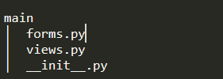

Main is the Flask blueprint for the client frontend use. We create files as the following picture.
We initialize the blueprint with this code.
We create a blueprint named main, import the route settings from the file view.py.
We setting the routes and logics with this code.
We defined three entry functions: index, check, and about.
This is the entry function for the front page routing with the root url '/'. It accept GET and POST methods. If the request method is GET, it provides the feedback input form with the template '/main/index.html' to the client to fill up the information. If the request method is POST, it gathers the information from the request, create a instance of the feedback model, send an email containing the generated token to the client provided email address, finally, present the token with the template '/main/success.html'. If any exception occurs during the database operation, it returns the warning message to the client with the template '/main/index.html'.
This is the entry function for the review status checking page routing with the url '/check/'. It accept GET and POST methods. If the request method is GET, it provides the token input form with the template '/main/check.html' to the client. If the request method is POST, it takes the token data from the request, tries to find the feedback with the token, and returns the feedback information with the template '/main/response.html' if the corresponding feedback exists, or returns the warning message with the template '/main/check.html' otherwise.
This is the entry function that simply provide the information about this web app.
We design the relating forms with this code.
We defined three form classes with the FlaskForm class provided by flask-wtf: FeedbackForm, FeedbackCheck, and FeedbackResponse.
This form contains three fields for filling the feedback information, and a submit button for sending the post request.
This form contains one field for filling the token information, and a submit button for sending the post request.
This form contains six field for formatting the feedback information to present to the client.